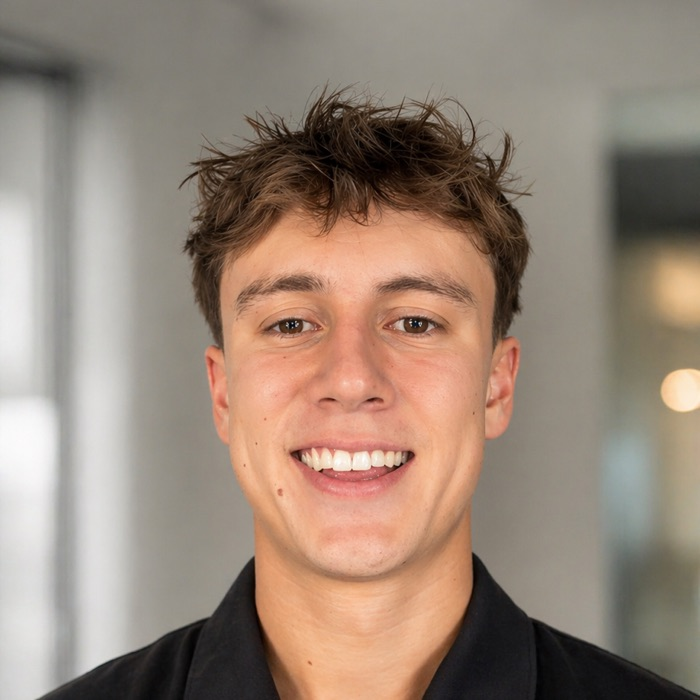

Auditor at Deloitte. Co-founder of WeTalk.ai. We took an AI voice agent from concept to answering real patient calls in under eight months. I built the AI operating system that runs the company behind it, while working full time in audit.

Jenny · the AI phone receptionist we built · answering clinic calls 24/7 (move your cursor across the waveform)
01 · The story
WeTalk.ai is a registered NZ company I co-founded with Hamish Faulks. We build AI voice agents for physio and allied health clinics. This is how it has gone so far, expand each step.
Started with a simple observation: clinics miss calls, and missed calls are missed patients. We designed "Jenny", an AI receptionist that answers inbound patient calls 24/7, books appointments in real time through practice management APIs (Gensolve), and confirms by SMS.
Stack: Vapi, ElevenLabs, Claude and Twilio. My side of the company: strategy, operations and the AI systems that run it. Hamish runs sales and client relationships, and a contract engineer leads Jenny's core build.
Jenny went live with our first client, a clinic within a 10-clinic national network, answering the clinic's real inbound patient calls. Concept to production deployment in under eight months, alongside a full-time audit job.
Production teaches you what no demo can. We fed real calls, real booking scenarios and real failure modes back into the build and redesigned Jenny into a production-grade system: guardrails with human escalation for medical questions and private information, and per-clinic configuration of services, practitioners and booking rules.
Second client secured on the rebuilt platform, deployment built and tested, signing 20 July 2026. Active pipeline of further clinics, including the opportunity to expand across our first client's 10-clinic network.
02 · My core build
I designed and built the system that runs WeTalk's back office: a git-version-controlled AI operations layer that holds the company's knowledge, watches its systems through live integrations, executes routine operations, and rewrites its own understanding of the business every night. The whole team now works through it.
03 · The commercial side
Unit economics and pricing
Per-minute AI cost analysis from usage actuals, monthly burn and break-even modelling, and a margin-floor pricing structure.
Client-facing delivery
Scoped requirements with clinic owners and reception staff, ran product demos, and co-managed pilot relationships and commercial negotiations.
04 · The day job
Junior Associate in Deloitte Auckland's audit practice since January 2026, where the AI and audit worlds are starting to meet.
Only graduate in Deloitte's Auckland audit practice selected to test a new AI model for Deloitte Audit
Providing structured feedback on a model in development, from the perspective of someone who ships AI systems outside work hours.
Audit AI Champions team
Supporting AI adoption across the practice, alongside core audit delivery: substantive testing, process walkthroughs and day-to-day client liaison. Audit Intern at RSM before this (2024–25).
05 · Foundations
Earlier: basketball coach, hospitality, retail sales. Five years of customer-facing work alongside school and university.